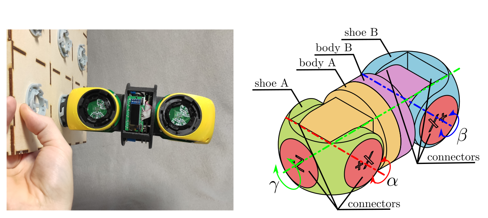
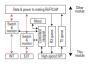
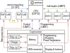
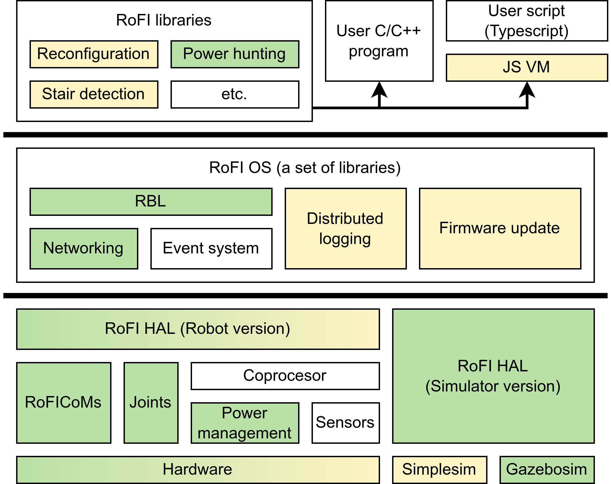
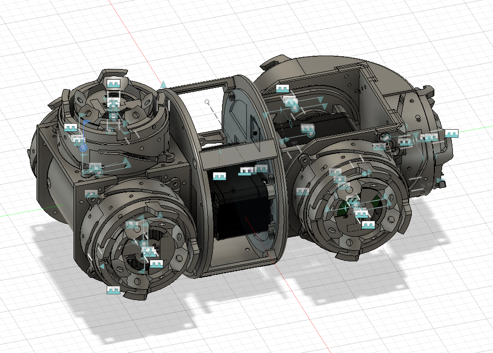

Physical implementation of RoFI modules
Jan Mrázek
What is universal module

What do we want to do with it?
Control the modules via programs that:
- run directly on the module
- cannot damage the module nor get in into undefined state
The user should directly control:
- joints,
- communication,
- power sharing scheme,
- read high-level sensor data.
What should be opaque to the user:
- program management,
- power management,
- networking,
- actual hardware drivers
Basic building block: RoFICoM


Building RoFI


Architecture of the module

- Why coprocesor?
- power management
- convinient programming
- user program management
- How does energy flow?
- standalone
- source
- sink
- wire
- How does user program run?
Software achitecture

Power management and sharing
Battery operation:
- Ensure safe operation
- Charge it via USB
- Charge it from other module
- Why high voltage?
- Give power
- Receive power
- Transmit power
HAL vs. hardware vs. user programs
Mechanical construction

- Too complex (35+ parts)
- Current work: new, simple version
Really? Typescript for RoFI?
- C++ often hurts. People don't know it.
- Need to express asynchronous event
- callback hell,
- RBL is nice, but complex.
- Firmware compilation times are unbearable.
- Difficult deployment of native firmware.
- Most firmwares are simple!
Working prototype: https://github.com/yaqwsx/Jaculus
- Build on top of Duktape interpreter.
- Possibility to embed native libraries.
Where are we... where will be?
- We make slow, but hopefully, steady progress!
- Hardware is the current blocker.
- If you want to join me on our hardware journey, you are welcome!